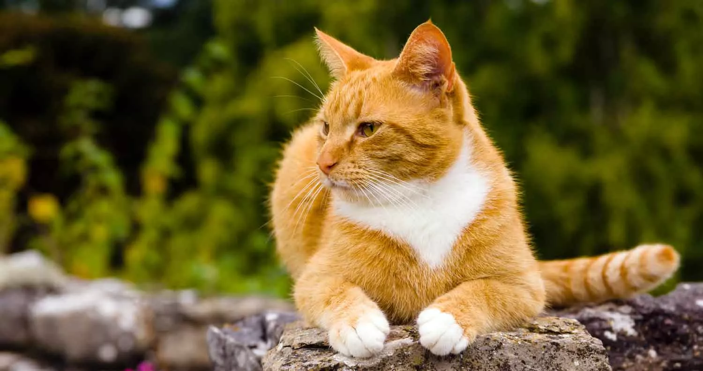

Welcome Weary Travelers!
To the One-Stop Potion Shop! With our access to this futuristic device called "the internet", we are working to bring the world of magic to you. So stay a spell, and take a look at the links below to check out our generous offers!
About Us
The art of potion-making has been in our shop for generations. Starting in a little town called Cloverville, we have refined the art of healing and manipulating the body through carefully collected ingredients. (We are always accepting new inquiries about treasure bounty, please see our contact page). After a relocation to New Wizardton due the the horrors, we are happy to reach out to those on the "World Wide Web" for interested parties. Despite our success with apprenticeship programs and such, we are a small business run by a a couple people. We outsource our magic ingredients from local bounty hunters and businessmen, whoever can provide the best results. But don't worry! Everything is harvested ethically (if stealing from dragons is ethical and safe). I can guarantee you will enjoy the store, please feel free to come by and pet our familiar cat, Garfield. Hope to see you soon!
All content copyright © 2022, created by Megan S. ™ Created By Megan